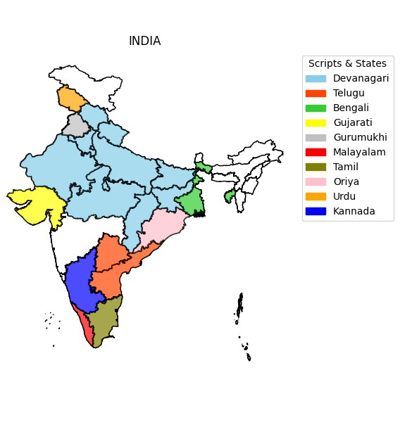
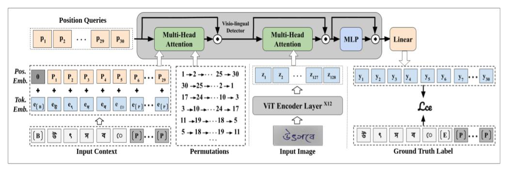
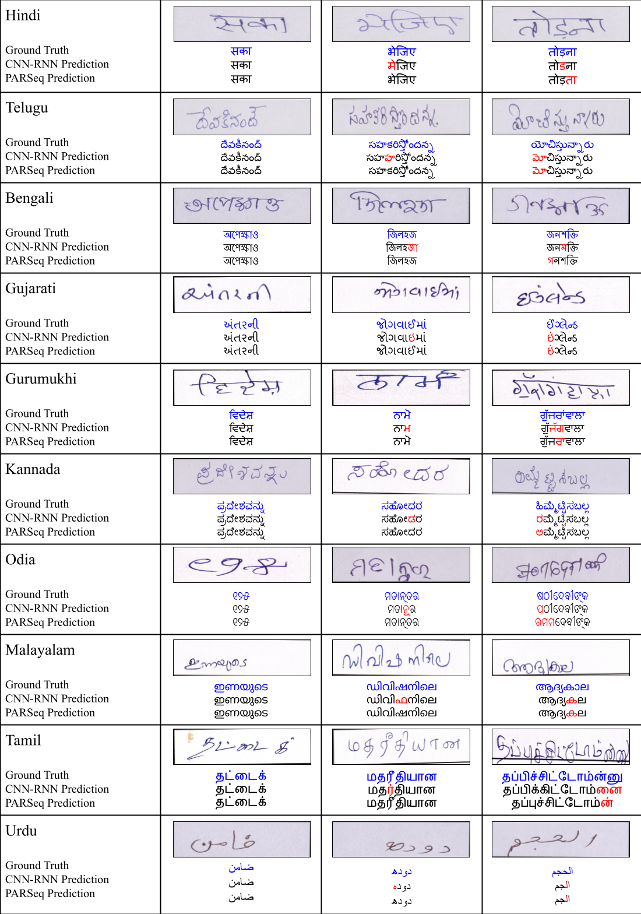

A transformer-based recognizer (PARSeq) for handwritten text across ten Indic scripts, boosted by transfer learning from printed text.

Handwritten Text Recognition (HTR) presents a significant challenge in computer vision due to various factors such as individual writing styles, noise, blur, and other imperfections in the text. This challenge is further exacerbated when dealing with languages using Indic scripts, characterized by complex character structures, extensive character inventories, and specific cultural nuances. In this study, we address these challenges by focusing on enhancing handwritten text recognition for ten Indic languages: Hindi, Bengali, Telugu, Tamil, Gujarati, Gurumukhi, Oriya, Kannada, Malayalam, and Urdu.
We aim to improve recognition accuracy by leveraging the Permuted Autoregressive Sequence Model (PARSeq), an extension of the transformer-based model. Our results demonstrate the superiority of the PARSeq model over existing approaches, particularly in achieving state-of-the-art performance across most languages. Additionally, we investigate the efficacy of transfer learning from printed text to handwritten text, revealing its potential to enhance recognition performance. The trained models and code are publicly available.
Implement a transformer-based model using PARSeq to enhance recognition accuracy for Indic handwritten text.
Compare against existing CNN/RNN-based approaches, showcasing state-of-the-art performance across most of the ten languages.
Investigate the impact of pre-training on printed text before fine-tuning on handwritten text, highlighting its effectiveness.
PARSeq's encoder is a 12-layer Vision Transformer (ViT); its decoder is a single transformer layer trained with permutation language modeling, so it learns to predict output tokens in many different orders rather than strictly left-to-right, letting it draw on bidirectional context at inference time. All models were trained on the IIIT-INDIC-HW-WORDS dataset on four NVIDIA GeForce GTX 1080 Ti GPUs.

PARSeq is compared against two CNN/RNN-based baselines on the IIIT-INDIC-HW-WORDS dataset across ten Indic languages, using Word Error Rate (WER) and Character Error Rate (CER, both lower is better).
WER and CER across languages. Bold indicates our best result.
| Language | CRNN | Mondal et al. | Ours (PARSeq) | |||
|---|---|---|---|---|---|---|
| WER↓ | CER↓ | WER↓ | CER↓ | WER↓ | CER↓ | |
| Hindi | 26.22 | 3.17 | 9.06 | 1.98 | 6.93 | 2.93 |
| Telugu | 23.98 | 3.18 | 12.11 | 2.15 | 10.37 | 2.50 |
| Bengali | 15.71 | 4.85 | 12.34 | 2.35 | 16.35 | 4.17 |
| Gujarati | 18.59 | 2.39 | 9.21 | 1.19 | 12.04 | 2.74 |
| Gurumukhi | 18.37 | 3.42 | 10.77 | 2.1 | 11.92 | 3.24 |
| Kannada | 7.65 | 1.79 | 8.57 | 1.01 | 6.55 | 1.13 |
| Odia | 19.19 | 3 | 12.32 | 1.32 | 14.86 | 3.38 |
| Malayalam | 10.23 | 1.92 | 9.37 | 1.12 | 5.97 | 0.98 |
| Tamil | 7.82 | 1.92 | 9.18 | 1.25 | 8.02 | 1.43 |
| Urdu | 24.11 | 5.07 | 18.76 | 3.89 | 17.81 | 5.51 |

Beyond the model itself, we apply a lexicon-based post-processing step to the predictions. A lexicon is built by concatenating the training, validation, and test sets; each predicted word is then compared against it by edit distance, and the top-k closest lexicon words are treated as candidates. At Recall 1, the single closest candidate replaces the prediction; at Recall 2–5, the candidate among the top 2–5 with the least edit distance to the ground truth is chosen. Error rates drop sharply as recall increases, confirming that most of PARSeq's mistakes are near-misses a lexicon can catch.
WER and CER (%) after post-OCR correction, at each recall level. Lower is better.
| Language | Recall 1 | Recall 2 | Recall 3 | Recall 4 | Recall 5 | |||||
|---|---|---|---|---|---|---|---|---|---|---|
| WER↓ | CER↓ | WER↓ | CER↓ | WER↓ | CER↓ | WER↓ | CER↓ | WER↓ | CER↓ | |
| Hindi | 4.14 | 2.03 | 3.06 | 1.59 | 2.52 | 1.34 | 2.16 | 1.15 | 1.93 | 1.05 |
| Telugu | 2.84 | 1.54 | 1.68 | 1.05 | 1.31 | 0.86 | 1.13 | 0.76 | 1.04 | 0.07 |
| Bengali | 7.77 | 3.66 | 5.6 | 2.8 | 4.6 | 2.32 | 4.06 | 2.08 | 3.68 | 1.83 |
| Gujarati | 4.41 | 1.92 | 2.52 | 1.26 | 1.87 | 0.97 | 1.55 | 0.83 | 1.38 | 0.74 |
| Gurumukhi | 6.76 | 2.87 | 4.07 | 2.06 | 3.61 | 1.6 | 3.04 | 1.38 | 2.67 | 1.21 |
| Kannada | 1.64 | 0.61 | 0.87 | 0.41 | 0.71 | 0.33 | 0.49 | 0.25 | 0.39 | 0.21 |
| Odia | 6.08 | 2.62 | 3.61 | 1.78 | 2.72 | 1.43 | 2.32 | 1.26 | 2.08 | 1.34 |
| Malayalam | 1.29 | 0.54 | 0.71 | 0.36 | 0.53 | 0.29 | 0.44 | 0.24 | 0.35 | 0.2 |
| Tamil | 1.6 | 0.78 | 0.96 | 0.54 | 0.8 | 0.47 | 0.66 | 0.41 | 0.56 | 0.37 |
| Urdu | 14.75 | 5.98 | 11.98 | 4.79 | 10.34 | 4.12 | 9.04 | 3.64 | 8.01 | 3.29 |
Word Error Rate with vs. without pre-training on printed text before training on handwritten text. Bold indicates the best result.
| Language | Trained model | Pre-trained + Trained model |
|---|---|---|
| Bengali | 23.69 | 19.08 |
| Gujarati | 17.69 | 12.32 |
| Gurumukhi | 14.63 | 11.92 |
| Kannada | 11.59 | 7.28 |
| Odia | 21.03 | 16.78 |
| Malayalam | 10.49 | 5.97 |
| Tamil | 9.82 | 8.02 |
This work is supported by MeitY, Government of India, through the NLTM Bhashini project.